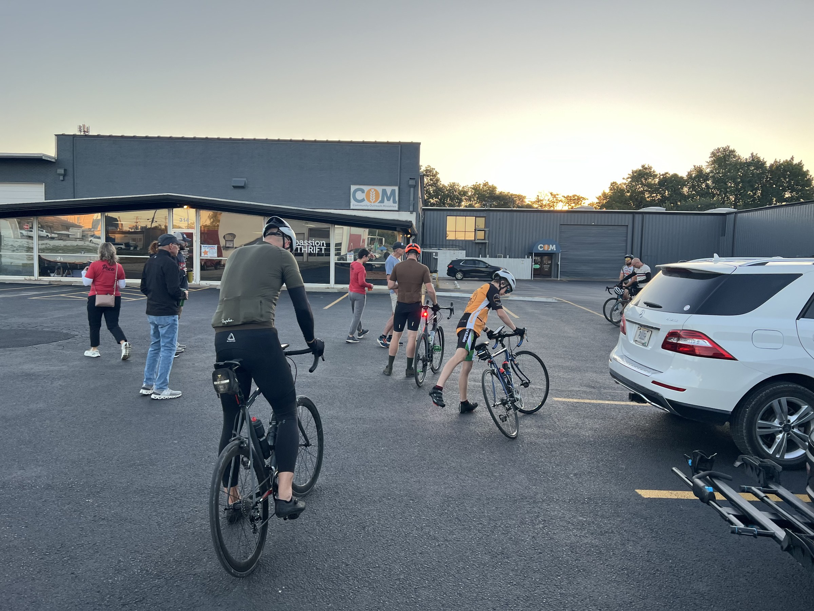
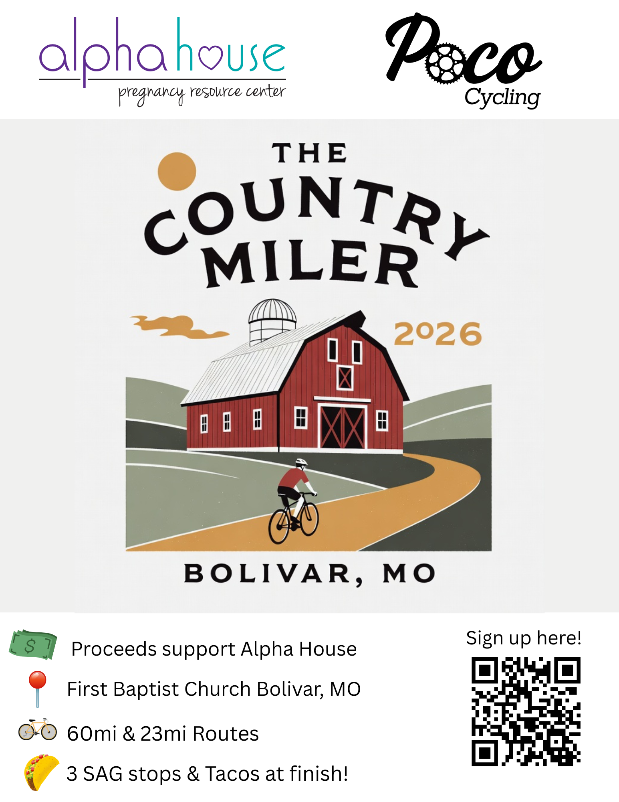

Annual gran fondo fundraiser
The Country Miler 2026
PoCo Cycling’s signature gran fondo on Polk County country roads — a supported road ride, not a Frisco Highline / rail-trail event. Two distances, full support, tacos at the finish — and proceeds that matter.
Event energy
Country roads, community starts, and roadside stops — this is a Polk County road ride.



From the course
A short taste of Country Miler energy on Polk County country roads — muted clip, play when you’re ready.

Start line
First Baptist Church, Bolivar — roll out together, then choose your distance. Expect quiet country roads around Polk County, club volunteers, and that special gran fondo mix of challenge and camaraderie.
Routes
- 60-mile — the full Country Miler experience for endurance riders
- 23-mile — a welcoming shorter option for newer riders and mixed groups
Detailed cue sheets and GPX will be published closer to event day. Three SAG stops keep bottles full and spirits high.
Why we ride
Proceeds support Alpha House Pregnancy Resource Center. Every registration and sponsorship helps neighbors in our community. Riding for a cause is core to PoCo’s identity.
What to expect
- Marked / supported courses (details TBA)
- Three SAG stops with water & snacks
- Finish-line tacos
- A warm club welcome — not a race-only vibe
Registration
Official signup is live on BikeReg — secure your spot for The Country Miler.
Sign up on BikeReg
Register for the 60-mile or 23-mile route through BikeReg. Questions about the event? Contact the club or follow us on Facebook.